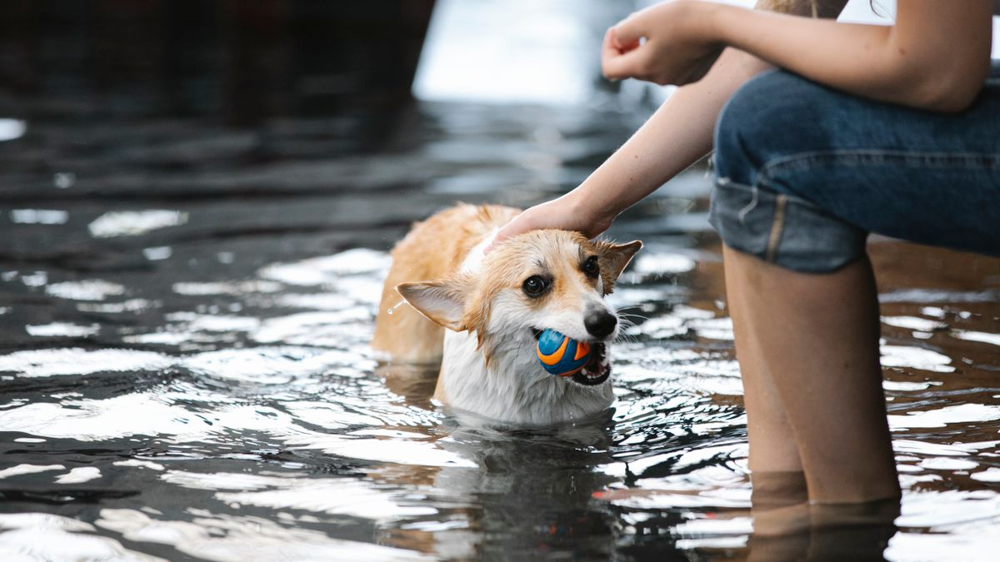

위치와 개수
세탁기·식기 2m 이상, 통행 적은 구석. 1마리: 화장실 1개(50×40cm 이상). 2마리: 2~3개를 서로 보이지 않게 분산.
청소 주기
- 응고 덩어리: 하루 2회(아침·저녁)
- 냄새 나기 전 모래 보충(주 1~2회)
- 통 전체 세척: 2주 1회, 중성세제+완전 건조
- 모래 전량 교체: 4~6주(제품 안내 따름)
응고 제거를 저녁에만 하면 아침 냄새가 쌓입니다. 같은 시간대 2회가 습관화되면 고양이도 화장실 위치를 예측하기 쉽습니다. 통 세척 후에는 햇빛 건조 또는 24시간 자연 건조를 권합니다.
모래·화장실 변경 시
7~10일간 기존:신규=7:3→5:5→3:7. 화장실 덮개형→개방형은 3일에 10cm씩 뚜껑 제거. 한꺼번에 바꾸면 화장실 밖 배변이 늘 수 있습니다.
향이 강한 모래는 거부 반응이 나올 수 있습니다. 무향에 가깝게 시작하고, 거부 시 이전 모래 비율을 7:3 이상으로 되돌리세요.
이상 신호
화장실 밖 배변 2일 연속, 혈뇨, 30분 이상 화장실 안에서 울음—메모와 함께 검진을 검토하세요.

실전 적용 노트
화장실 루틴은 '모래 종류'보다 '개수·위치·청소 주기'가 먼저입니다. 고양이 1마리도 화장실 2개를 권하는 집이 많습니다.
굴·사료 그릇·소음이 큰 가전과 떨어뜨리세요. 통로 끝·문 뒤처럼 '들어가서 나올 공간'이 확보되어야 합니다.
응고형 모래는 하루 1~2회 덩어리 제거, 2~4주마다 전량 교체를 기본으로 합니다. 냄새가 올라오면 주기를 앞당기세요.
화장실을 옮길 때는 기존·신규를 1주간 병행하고, 사용 횟수를 세어 점진적으로 전환합니다.
바닥 밖 배변은 벌칙이 아니라 신호로 봅니다. 3일 메모(시간·장소·대변/소변) 후 원인을 좁혀 보세요.
뚜껑 있는 화장실은 통풍이 나쁘면 거부하는 개체가 있어, 먼저 개방형으로 패턴을 잡는 편이 안전합니다.
다묘 가정은 마리수+1개 화장실을 목표로 하고, 층마다 최소 1개를 두세요.
청소 시 펫 전용 세제를 쓰고 향이 강한 제품은 피합니다.
배변 습관 변화와 함께 물 섭취가 늘면 검진을 검토하세요.
이번 주 화장실 루틴 체크리스트입니다. 모래보다 개수·청소 주기가 먼저입니다.
- 고양이 1마리 기준 화장실 2개를 확보했습니다.
- 굴·사료·소음 가전과 떨어뜨렸습니다.
- 응고 덩어리를 하루 1~2회 제거했습니다.
- 2~4주 주기 전량 교체 일정을 잡았습니다.
- 화장실 이동 시 1주간 병행했습니다.
- 바닥 밖 배변 시 3일 메모(시간·장소)를 했습니다.
- 향 강한 세제 대신 펫 전용 세제를 썼습니다.
- 배변 변화+다음을 늘리면 검진을 검토합니다.
화장실 불만은 고양이가 보내는 가장 흔한 신호 중 하나입니다. 벌칙보다 환경부터 보세요.
고양이 화장실은 모래보다 개수·위치·청소 주기가 먼저입니다. 1마리도 2개, 굴·사료·소음에서 멀리, 덩어리는 하루 1~2회 제거합니다. 이동은 1주 병행, 바닥 밖 배변은 3일 메모 후 환경부터 수정하세요. 뚜껑형은 통풍 불만이 있을 수 있어 개방형으로 패턴을 잡는 편이 안전합니다.
화장실 청소 시간을 급여 시간과 묶어 두면, 바쁜 날에도 덩어리 제거를 잊지 않기 쉽습니다.
마무리로, 이번 주에는 체크리스트 3개만 골라 2주 반복해 보세요. 작은 성공이 쌓이면 나머지는 자연스럽게 늘어납니다.
기록이 쌓이면 병원·상담 때 설명이 쉬워집니다. 한 줄 메모라도 같은 항목으로 이어 쓰는 것이 핵심입니다.
완벽한 루틴보다 80% 지켜지는 루틴이 오래 갑니다. 안 된 날은 원인 한 줄만 적고 다음 주에 조정하세요.
오늘 당장 하나만 고른다면, 체크리스트 맨 위 항목부터 시작해 보세요. 나머지는 다음 주로 미뤄도 괜찮습니다.
가족이 함께 돌본다면, 누가 했는지 체크박스 한 칸만 추가해도 누락·중복이 줄어듭니다.
검색으로 답을 찾기 전에 7일 메모를 먼저 정리해 보세요. 증상 설명이 훨씬 빨라지는 경우가 많습니다.
새 용품·새 사료·새 루틴은 동시에 바꾸지 않습니다. 한 가지만 바꾸고 5일 관찰하는 편이 안전합니다.
이번 달 목표는 '매일 완벽'이 아니라 '이번 주 3회 성공'입니다. 0회에서 1회로 바뀌는 것만으로도 충분한 진전입니다.
스트레스 신호(회피·짖음·숨 가쁨)가 보이면 시간을 반으로 줄이세요. 짧게 자주 성공하는 쪽이 학습에 유리합니다.
계절·이사·손님처럼 환경이 바뀌는 주에는 루틴을 단순화하세요. 필수 3개만 지키고 나머지는 다음 주로 미뤄도 됩니다.
사진 한 장이 긴 설명보다 나을 때가 있습니다. 같은 조명·각도로 남기면 변화 비교가 쉬워집니다.
병원 방문 전에는 '언제부터·얼마나 자주·무엇이 함께 변했는지' 3가지만 정리해도 상담이 수월해집니다.
루틴이 무너진 날을 실패로 보지 말고, 겹친 일정(야근·손님·이사)을 한 줄로 적어 두세요. 다음 주 조정 근거가 됩니다.
정리하며
모래 3만 원짜리 써도 3주 미청소면 냄새는 같습니다.
저는 고양이 화장실 글에서 브랜드보다 '마지막 통 세척 날짜'를 먼저 묻습니다.
화장실 통에 '마지막 세척 날짜' 스티커를 붙여 보세요. 모래 브랜드보다 날짜가 먼저입니다.
초보자가 자주 실수하는 포인트
- 식기 옆·세탁기 옆 배치
- 응고 제거 3일 미루기
- 모래 하루 만에 100% 교체
- 통 세척 후 미건조
- 다묘인데 화장실 1개
체크리스트
- 위치·개수 점검
- 응고 아침·저녁 제거
- 2주 통 세척 캘린더
- 모래 10일 점진 전환
- 배변 패턴 메모
자주 묻는 질문
- 화장실을 몇 개나 두어야 하나요?
- 기본은 마리수+1개입니다. 층이 나뉜 집은 층마다 최소 1개를 두는 편이 안전합니다.
- 냄새가 심한데 모래를 바꿔야 하나요?
- 모래보다 청소 주기·통 세척·위치를 먼저 점검하세요. 응고 제거와 2주 세척만으로도 개선되는 경우가 많습니다.
이 글은 초보자 기준으로 이해하기 쉽게 정리되었으며, 내용은 운영 과정에서 순차적으로 보완될 수 있습니다. 수의사 등 전문가의 진단·처치를 대체하지 않습니다.